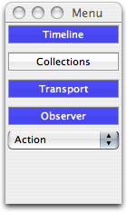
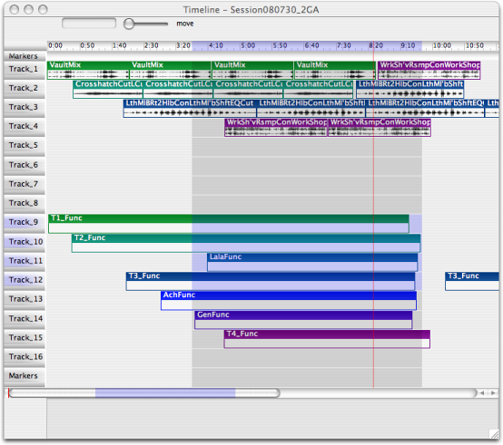
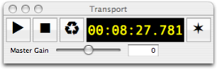
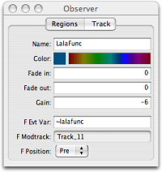
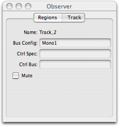
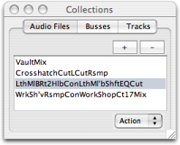
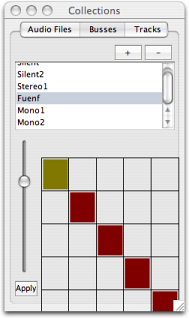
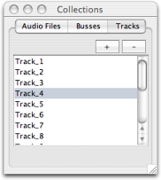

Bosque - Editing
This document describes the GUI based editing facilities of Bosque. The programmatic facilities are described in the help files of the respective classes, e.g. BosqueTimelineEditor, BosqueSession, BosqueFuncRegionStake, etc.
The Menu Window
When Bosque is launched, a few windows appear in SwingOSC. There is a "menu" window which allows you to show and hide all the other windows. Closing the windows via the titlebar close button is disabled.

Furthermore the menu window has a drop down menu labelled "Action" which contains utility functions:
Audio Rec. -- brings up a GUI for recording output from scsynth. The bus is already configured to record from Bosque's master bus.
OSC Mem Play -- brings up a GUI to playback OpenSoundControl data. In this window clicking on the ellipsis (...) in the top right corner lets you select an OSC file (created with the OSC recorder described in the next paragraph). The loop or infinity symbol button indicates whether the transport is slaved (button blue / active) or not (button grey / off) to the main bosque transport. The Offset field can be used to specify a relative time offset when playing back in sync to the main transport.
OSC Rec -- brings up a GUI to record OSC data received by sclang. File names are automatically created inside the folder specified in the top of the window (again clicking on the ellipsis (...) brings up a folder chooser dialog). The key text field specifies a filter for incoming OSC messages. Only messages beginning with the key are recorded. If "Ignore Bundle Times" is checked, messages are written into the file with a timetag corresponding to the arrival time in sclang. The loop or infinity symbol button indicates whether the transport is slaved (button blue / active) or not (button grey / off) to the main bosque transport. When slaved, a new file is automatically recorded each time the main transport playback starts.
Fullbody -- brings up a view of the EGM fullbody OSC data (3D skeleton broken up into three 2D views).
The Timeline Window
This is the main editing window for the bosque sessions. The timeline is shown with time on the horizontal axis and tracks on the vertical axis.

To begin editing a session, you will first need to insert some amount of time, by choosing the screenbar menu item Timeline -> Insert Span and entering a duration in seconds. The timeline axis on the top part of the window shows the currently visible span, corresponding to
~doc = Bosque.default.session;
~visiSpan = ~doc.timelineView.span; // the visible span in the timeline window
Note that Span objects in Bosque are always specified in sample frames (where the default sample rate is 44.1 kHz), whereas the GUI timeline axis shows time in (HH:)MM:SS(.millis).
To navigate in time, the following keyboard shortcuts are available:
Ctrl+Cursor Left/Right -- Zoom in/out
Cmd+Shift+Cursor Left -- Zoom completely out
The visible portion can be moved with the scrollbar on the bottom of the window.
A red vertical line indicates the current timeline cursor position, corresponding to
~doc.timelineView.cursor.position;
... when the transport is not running, or ...
~doc.transport.currentFrame;
... when the transport is running.
The cursor position is used
- as the starting point for playback
- as the insertion point for the menu item Edit -> Paste
- as the cutting point when using the menu item Timeline -> Split Objects
- for dropping audio regions from the Collections window (see separate section)
The cursor position can be altered by clicking anywhere inside the timeline axis.
A blue shaded rectangle indicates the current timeline selection, corresponding to
~doc.timelineView.selection.span;
A blue shaded rectangle indicates the current timeline selection. It can be altered by performing a Shift+Click inside the timeline axis. Alt+Click in the timeline axis clears the selection span. Stake and track selections are described in other sections of this text.
The timeline selection is used
- for loop playback
- for the menu items Timeline -> Clear Span and Remove Span
- for inserting objects using the menu items Timeline -> Insert Env and Insert Func
- for changing the master volume envelope gain using Timeline -> Change Gain
Tracks
The visible portion can be moved with the scrollbar on the bottom of the window.
XXX
Stakes
XXX
Markers
XXX
Master Volume Envelope
XXX
Audio File Drag-Sink
XXX
Mouse-Tools
XXX
Waveform Zoom
XXX
The Transport Window
XXX

The Observer Window
XXX
Regions

XXX
Track

XXX
The Collections Window
XXX
Audio Files

XXX
Busses

XXX
Tracks

XXX
__________
this file last modified: 08-sep-08